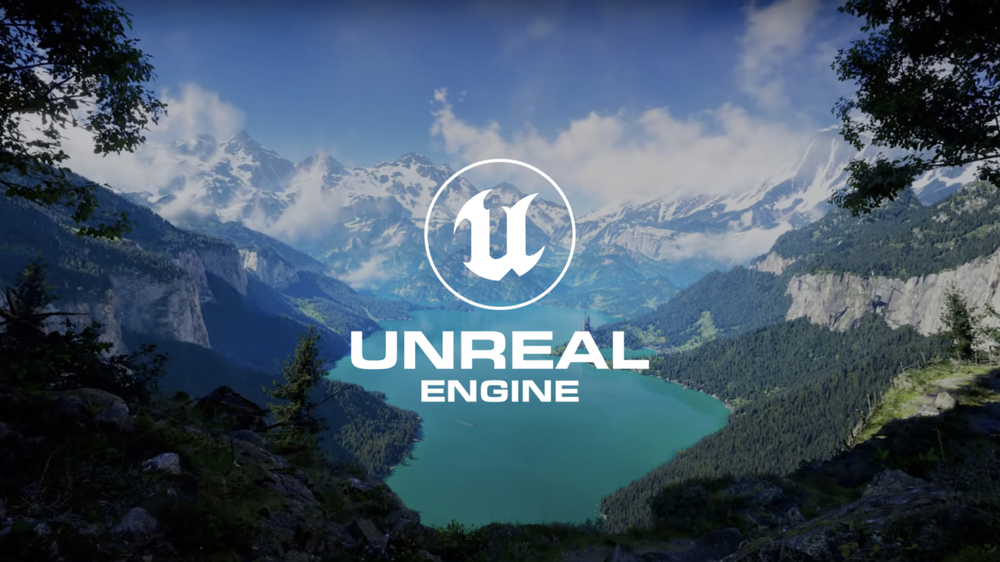

This was the project where I learned Unreal Engine. Over ten weeks I went from knowing almost nothing about the engine to building a playable level, and I wanted to learn it by making something I actually cared about instead of a generic tutorial scene.
The task was to build a third-person environment that stays as close as possible to the place you want to remake. It was the first step toward my later VR project, The Star, where I used what I learned here to build a story for a headset.
I chose de_cache, a map from CS:GO that I loved playing when I was younger. The game is still huge today, and Cache was one of its most interesting maps to me, with a layout that is easy to recognise once you've spent hours in it.
Because I knew the map so well, I could judge my own work: does it feel right when you walk through it? That gave me a clear goal to aim for, and a clear way to see my progress week by week.
I rebuilt the map and the character movement as closely as I could to the game. I didn't recreate the whole map, but enough of it that people who have played Cache recognise it. That was the goal I was most proud of reaching.
I also got quite good at the movement and the weapon interaction. At the end of the playtest I added knives and guns, so the map didn't just look like Cache but could be played like a small version of the game.
The project taught me the basics of working in Unreal: building a level, getting a character to move well, and making objects the player can pick up and use. Most of it was built for a third-person and first-person view, so I learned how much the camera perspective changes the way a space feels.
It became the foundation for my Star VR project. Without this first project I wouldn't have been able to move that quickly in Unreal when the VR course started.